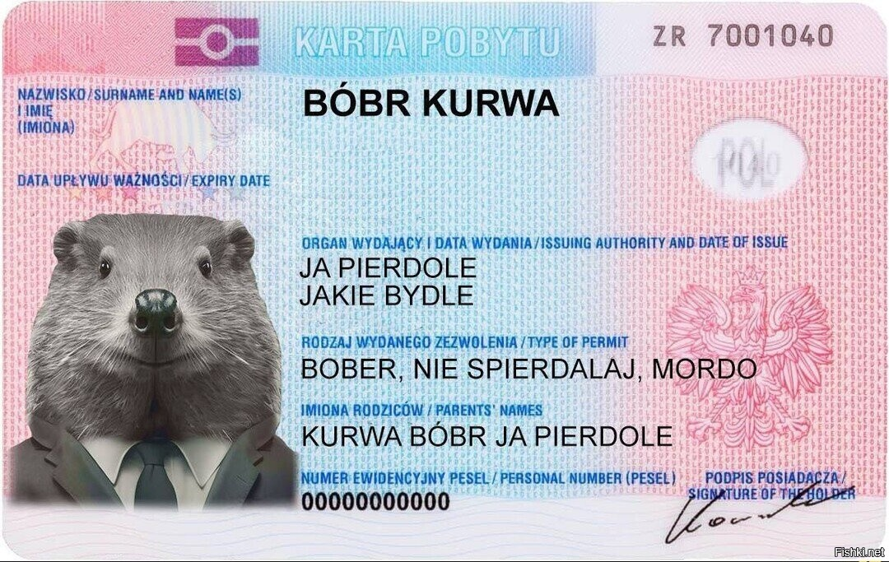

Мем "Bobr Kurwa"
Происхождение мема
Мем "Bóbr Kurwa" (также известный как "Bóbr Kurwa ja pierdole") возник из видео, где молодой поляк эмоционально реагирует на встречу с бобром.
Значение и популярность
Фраза "Bóbr Kurwa" не имеет конкретного значения, но используется для усиления эмоций. Мем стал популярным благодаря звучным польским выражениям и забавной ситуации.
"Kurwa" на польском - это ругательство.
История развития
- 2012 год: Появление первых видео в Польше с попытками заснять бобров.
- Распространение в англоязычном интернете.
- Апрель 2023: Новая волна популярности после вирусного видео в TikTok.
Интересные факты
- Мем объединил пользователей из разных стран, включая Чехию, Словению, Россию и США.
- Бобр является важным символом для Польши, что добавляет мему культурный контекст.
- Фраза "Bóbr Kurwa" часто дополняется другими польскими выражениями для усиления эффекта.